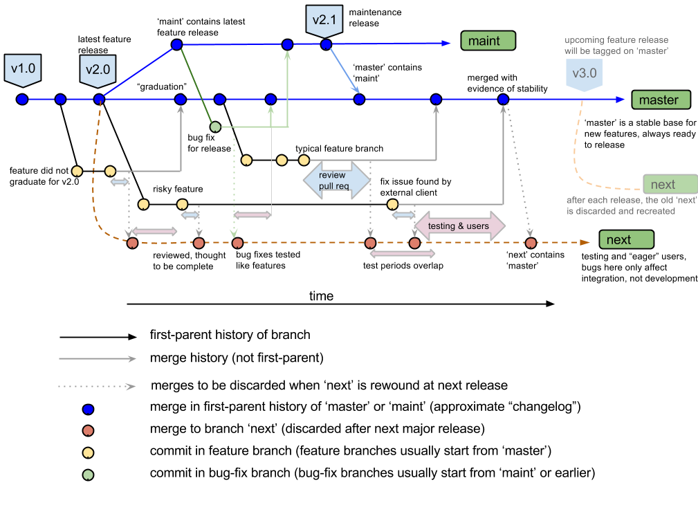

Project roles
- Users stress features, report issues, ask questions that steer project.
- Developers fix bugs and create features. They write code and docs and generally are agents of change in a software project. There are often many more developers than reviewers or maintainers.
- Reviewers are known experts in a part of a project and are called on to review the work of developers, mostly to make sure that the developers don’t break anything, but also to point them to related work, ensure common development practices, and pass on institutional knowledge. There are often more developers than reviewers, and more reviewers than maintainers.
Maintainers are loosely aware of the entire project. They track ongoing work and make sure that it gets reviewed and merged in a timely manner. They direct the orchestra of developers and reviewers, making sure that they connect to each other appropriately, often serving as dispatcher.
Maintainers also have final responsibility. If no reviewer can be found for an important contribution, they review. If no developer can be found to fix an important bug, they develop. If something goes wrong, it’s eventually the maintainer’s fault.
– Rocklin: The Role of a Maintainer
Each change has to be reviewed. This is the single biggest cost.
– Gommers: The cost of an open source contribution
Principles of Git workflows
- Reviewable
- Prioritize time and accuracy for reviewers
- Testable
- Untested code is usually broken
- Reviewing broken code is a waste of time
- Exception: “request for comment” (RFC) commits sketch an idea for discussion; will be revised before review/merging
- Atomic
- Small commits are easier to understand and make bug-free
- Also easier to revert
- Bisectable
- Test suites are always incomplete
- When we learn about a bug
- Stable
master- Bugs in
masterare highly disruptive
- Bugs in
- Minimize dependencies
- Deliver the bug-fix and nothing but the bug-fix
- To anyone who has the bug
- Deliver the feature and nothing but the feature
Examples
gitworkflows(7)

Inspecting history in the Git project
! git -C ~/src/git log -20 --graph --decorate --pretty=oneline --abbrev-commit
* [33m228f53135a[m[33m ([m[1;36mHEAD -> [m[1;32mmaster[m[33m, [m[1;31mgitster/master[m[33m)[m The second batch
* [33m6c630f237e[m Merge branch 'jk/gitweb-anti-xss'
[32m|[m[33m\[m
[32m|[m * [33ma376e37b2c[m[33m ([m[1;31mgitster/jk/gitweb-anti-xss[m[33m)[m gitweb: escape URLs generated by href()
[32m|[m * [33mb178c207d7[m t/gitweb-lib.sh: set $REQUEST_URI
[32m|[m * [33mf28bceca75[m t/gitweb-lib.sh: drop confusing quotes
[32m|[m * [33m0eba60c9b7[m t9502: pass along all arguments in xss helper
* [33m|[m [33m3288d99c92[m Merge branch 'ar/install-doc-update-cmds-needing-the-shell'
[34m|[m[35m\[m [33m\[m
[34m|[m * [33m|[m [33m932757b0cc[m[33m ([m[1;31mgitster/ar/install-doc-update-cmds-needing-the-shell[m[33m)[m INSTALL: use existing shell scripts as example
[34m|[m [33m|[m[33m/[m
* [33m|[m [33m4775e02a5c[m Merge branch 'ma/t7004'
[36m|[m[1;31m\[m [33m\[m
[36m|[m * [33m|[m [33mb018719927[m[33m ([m[1;31mgitster/ma/t7004[m[33m)[m t7004: check existence of correct tag
[36m|[m [33m|[m[33m/[m
* [33m|[m [33ma6c6f8d02a[m Merge branch 'js/complete-svn-recursive'
[1;32m|[m[1;33m\[m [33m\[m
[1;32m|[m * [33m|[m [33m1f9247a3bd[m[33m ([m[1;31mgitster/js/complete-svn-recursive[m[33m)[m completion: tab-complete "git svn --recursive"
[1;32m|[m [33m|[m[33m/[m
* [33m|[m [33m3ae8defaf9[m Merge branch 'jk/send-pack-remote-failure'
[1;34m|[m[1;35m\[m [33m\[m
[1;34m|[m * [33m|[m [33mad7a403268[m[33m ([m[1;31mgitster/jk/send-pack-remote-failure[m[33m)[m send-pack: check remote ref status on pack-objects failure
[1;34m|[m [33m|[m[33m/[m
* [33m|[m [33maec3b2e24f[m Merge branch 'jc/fsmonitor-sanity-fix'
[1;36m|[m[31m\[m [33m\[m
[1;36m|[m * [33m|[m [33m61eea521fe[m[33m ([m[1;31mgitster/jc/fsmonitor-sanity-fix[m[33m)[m fsmonitor: do not compare bitmap size with size of split index
* [31m|[m [33m|[m [33m4ab9616c76[m Merge branch 'sg/skip-skipped-prereq'
[32m|[m[33m\[m [31m\[m [33m\[m
[32m|[m * [31m|[m [33m|[m [33me0316695ec[m[33m ([m[1;31mgitster/sg/skip-skipped-prereq[m[33m)[m test-lib: don't check prereqs of test cases that won't be run anyway
[32m|[m [33m|[m [31m|[m[33m/[m
[32m|[m [33m|[m[33m/[m[31m|[m
* [33m|[m [31m|[m [33m723a8adba5[m Merge branch 'ds/test-read-graph'
[34m|[m[35m\[m [33m\[m [31m\[m
[34m|[m * [33m|[m [31m|[m [33m4bd0593e0f[m[33m ([m[1;31mgitster/ds/test-read-graph[m[33m)[m test-tool: use 'read-graph' helper
! git -C ~/src/git log -20 --graph --decorate --pretty=oneline --abbrev-commit --topo-order
* [33m228f53135a[m[33m ([m[1;36mHEAD -> [m[1;32mmaster[m[33m, [m[1;31mgitster/master[m[33m)[m The second batch
* [33m6c630f237e[m Merge branch 'jk/gitweb-anti-xss'
[32m|[m[33m\[m
[32m|[m * [33ma376e37b2c[m[33m ([m[1;31mgitster/jk/gitweb-anti-xss[m[33m)[m gitweb: escape URLs generated by href()
[32m|[m * [33mb178c207d7[m t/gitweb-lib.sh: set $REQUEST_URI
[32m|[m * [33mf28bceca75[m t/gitweb-lib.sh: drop confusing quotes
[32m|[m * [33m0eba60c9b7[m t9502: pass along all arguments in xss helper
* [33m|[m [33m3288d99c92[m Merge branch 'ar/install-doc-update-cmds-needing-the-shell'
[34m|[m[35m\[m [33m\[m
[34m|[m * [33m|[m [33m932757b0cc[m[33m ([m[1;31mgitster/ar/install-doc-update-cmds-needing-the-shell[m[33m)[m INSTALL: use existing shell scripts as example
[34m|[m [33m|[m[33m/[m
* [33m|[m [33m4775e02a5c[m Merge branch 'ma/t7004'
[36m|[m[1;31m\[m [33m\[m
[36m|[m * [33m|[m [33mb018719927[m[33m ([m[1;31mgitster/ma/t7004[m[33m)[m t7004: check existence of correct tag
[36m|[m [33m|[m[33m/[m
* [33m|[m [33ma6c6f8d02a[m Merge branch 'js/complete-svn-recursive'
[1;32m|[m[1;33m\[m [33m\[m
[1;32m|[m * [33m|[m [33m1f9247a3bd[m[33m ([m[1;31mgitster/js/complete-svn-recursive[m[33m)[m completion: tab-complete "git svn --recursive"
[1;32m|[m [33m|[m[33m/[m
* [33m|[m [33m3ae8defaf9[m Merge branch 'jk/send-pack-remote-failure'
[1;34m|[m[1;35m\[m [33m\[m
[1;34m|[m * [33m|[m [33mad7a403268[m[33m ([m[1;31mgitster/jk/send-pack-remote-failure[m[33m)[m send-pack: check remote ref status on pack-objects failure
[1;34m|[m [33m|[m[33m/[m
* [33m|[m [33maec3b2e24f[m Merge branch 'jc/fsmonitor-sanity-fix'
[1;36m|[m[31m\[m [33m\[m
[1;36m|[m * [33m|[m [33m61eea521fe[m[33m ([m[1;31mgitster/jc/fsmonitor-sanity-fix[m[33m)[m fsmonitor: do not compare bitmap size with size of split index
* [31m|[m [33m|[m [33m4ab9616c76[m Merge branch 'sg/skip-skipped-prereq'
[32m|[m[33m\[m [31m\[m [33m\[m
[32m|[m * [31m|[m [33m|[m [33me0316695ec[m[33m ([m[1;31mgitster/sg/skip-skipped-prereq[m[33m)[m test-lib: don't check prereqs of test cases that won't be run anyway
[32m|[m [33m|[m [31m|[m[33m/[m
[32m|[m [33m|[m[33m/[m[31m|[m
* [33m|[m [31m|[m [33m723a8adba5[m Merge branch 'ds/test-read-graph'
[34m|[m[35m\[m [33m\[m [31m\[m
[34m|[m * [33m|[m [31m|[m [33m4bd0593e0f[m[33m ([m[1;31mgitster/ds/test-read-graph[m[33m)[m test-tool: use 'read-graph' helper
! cd ~/src/git && gitk
git-flow

mastersees only releases- very stable (like
maintin the standard model), but looks inactive
- very stable (like
Rebase & Squash
- A linear sequence of feature-complete commits
- Suitable for new developers
- Not atomic; bisection can land on huge commits
- Bug-fixes may be duplicated in
maintandmaster
On merging from upstream
commit b8ffc1990c2cdad4f847a03479b787c8e1b99c7e (HEAD -> maint)
Merge: 77ec769c3b 9ff78c21f3
Author: Jed Brown <jed@jedbrown.org>
Date: Mon Dec 2 10:55:51 2019 -0700
Merge branch 'master' into my/feature-branch
* master: (218 commits)
ex18 update
DMSetFromOptions_Plex: add -dm_plex_check_all option
doc: Make DMSetFromOptions() manpage a hub for all Check functions.
DMSetFromOptions_Plex: process -dm_plex_check_pointsf and -dm_plex_check_interface_cones
DMPlexCheckSkeleton: Pass for uninterpolated meshes.
DMPlexCheckConesConformOnInterfaces -> DMPlexCheckInterfaceCones.
Update CHANGELOG
KSP ex49: add cholmod and superlu_dist cholesky tests
Mat tests ex127: add test for MatMult and MatMultAdd for sbaij + hermitian
MATSUPERLUDIST: fix MPIAIJ with commsize 1 case
MatMPIAIJGetLocalMat: fix reuse case and clarify man page
MATCHOLMOD: support for MatMatSolve and MatGetInfo
Mat: propagate properly symmetry options
MATSBAIJ: Fix Hermitian MatMult for Seq and MPI code paths
KSPComputeOperator: do not assume a DM is attached to the KSP
PetscLog: add utility routine to log external packages GPU time
PCBDDC: adjust conversions and fix solver type for sub_schurs
minor
CHOLMOD: expose customizable GPU parameters and number of methods
Add suitesparse to make check
- This is a huge vulnerability: we get lots of features that could cause problems in this branch.
Almost always better to focus on your own work in the branch.
If you must merge from upstream, explain why
Merge branch 'master' into my/feature-branch due to BaseClass API change
Consider rebasing instead, but that may invalidate testing of earlier commits in your feature branch.
Philosophy
- A branch has a purpose. The most obvious is a topic branch you use for developing a new feature. A topic branch ‘add-frotz’ would be about adding a new ‘frotz’ feature and shouldn’t do anything else. In a well organized project, ‘master’ branch (or ‘trunk’ if you are coming from subversion) has the sole purpose of containing proven-to-be-good changes to produce the next release. Your per-customer branch is to contain the changes suitable for the next customer code dump and nothing else. It typically consists of bugfixes and selected features the particular customer asked (and paid for).
- The act of making a commit with one or more parents and advancing the tip of a branch with that commit is to make this statement: I have considered what all of these parent commits represent, and in my belief the state I am committing is more suitable for the purpose of this branch than any of them.
– Junio Hamano: Fun with merges and purposes of branches
See also: * Rebasing and merging: some git best practices * Linus Torvalds on merging from upstream